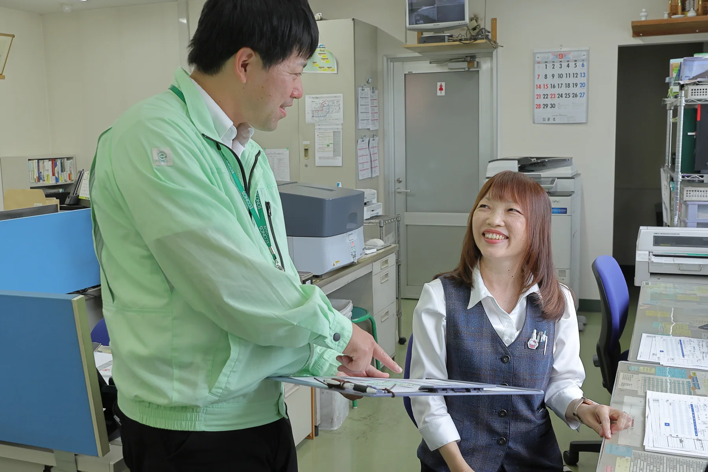
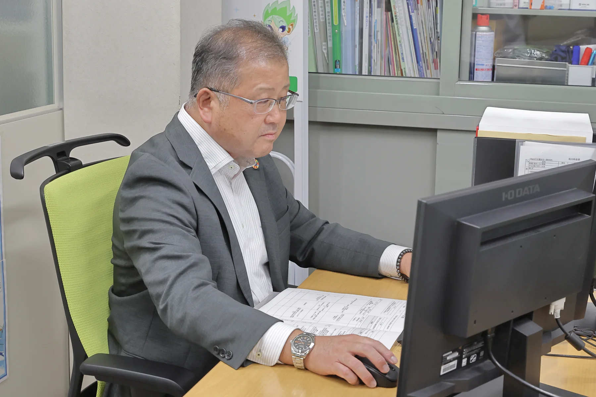

01PRIDE IN EVERYDAY WORK
その当たり前は、
誰かの仕事だ。
きれいな水も。安心できる街も。
今日の仕事が、支えている。
現場の小さな変化に気づく。仲間と情報を共有する。お客様の課題を考える。そうした一つひとつの行動が、地域の暮らしと産業の循環を動かしています。
働く人が自分の仕事の意義を理解し、誇りを持てること。学びながら成長し、自分らしく力を発揮できること。人を大切にする姿勢を、会社の未来につなげていきます。
02FIND YOUR ROLE
循環を支える、
いろいろな仕事。
職種を選んで、その役割を見てみよう。
募集の有無・配属・条件は公式採用情報をご確認ください。
OPERATIONS
日常を止めない。
循環を止めない。
収集運搬、施設の運用、水環境の維持管理など。安全と品質を大切に、地域の暮らしを直接支える役割です。
- 仕事の視点
- 日々の確認、確実な作業、仲間との連携。
- 社会とのつながり
- 地域の衛生や安心、産業活動の継続を支える。
TECHNOLOGY & IMPROVEMENT
現場の気づきを、
次の仕組みに。
設備や処理工程への理解を深め、安定した運用や品質の向上を考える。現場の知恵を改善につなげる役割です。
- 仕事の視点
- 設備・工程の理解、データや状態の確認、課題の発見。
- 社会とのつながり
- 資源を扱う仕組みの信頼性と、持続可能性を高める。
SALES & PLANNING
課題と技術の間に、
橋をかける。
お客様が困っていることを理解し、社内やパートナーの知恵をつなぐ。資源循環の新しい接点を見つける役割です。
- 仕事の視点
- 対話、課題整理、社内外の調整、提案。
- 社会とのつながり
- 企業や地域の困りごとを、協働のきっかけにする。
BUSINESS SUPPORT
人と情報を支え、
仕事を前へ。
日々の情報や手続きを正確につなぎ、現場やお客様を支える。会社全体が力を発揮するための基盤を担う役割です。
- 仕事の視点
- 正確な情報、円滑な連絡、業務の整理と改善。
- 社会とのつながり
- 一つひとつの業務の信頼を積み重ねる。

03GROW TOGETHER
人の成長が、
会社の未来になる。
01
仕事の意味を知る
目の前の業務が、地域やお客様のどんな安心につながるのかを理解する。
02
学びを、仕事に生かす
知識や技術を深め、現場での気づきを次の改善につなげる。
03
互いの力をつなぐ
職種や世代を越えて協力し、一人では解決できない課題に向き合う。
YOUR NEXT STEP
まずは、この会社を
知ることから。
募集職種、働く条件、選考情報を公式採用情報でご案内しています。
仕事体験や見学についても、実施状況を採用窓口へお問い合わせください。
マイナビ2027の会社情報に移動します。